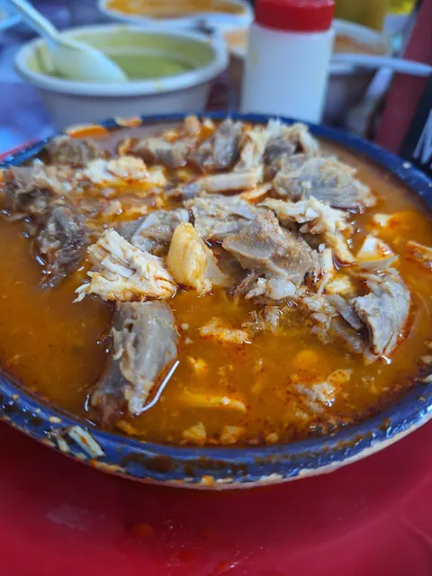
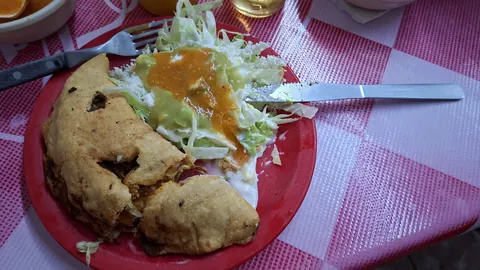
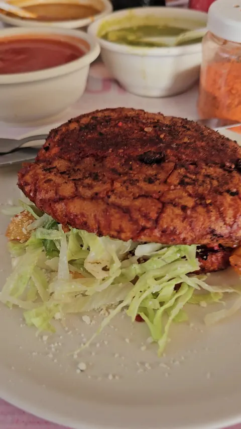
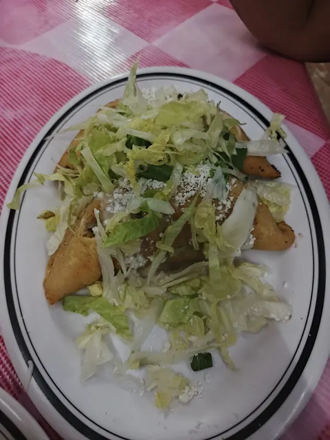
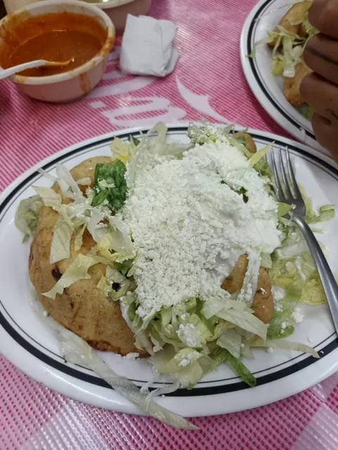
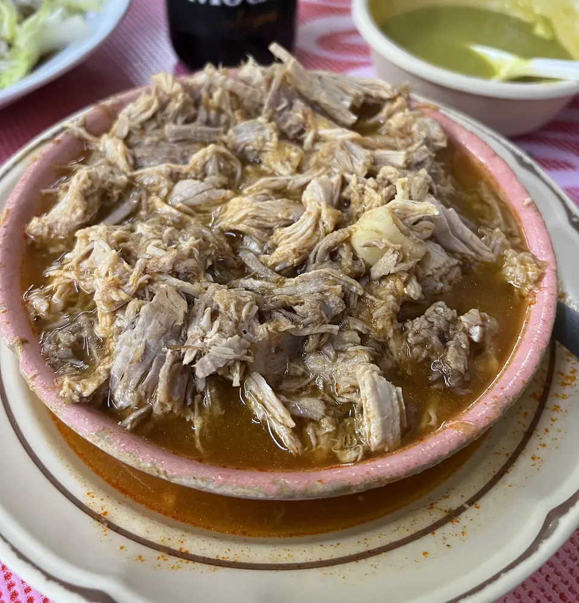
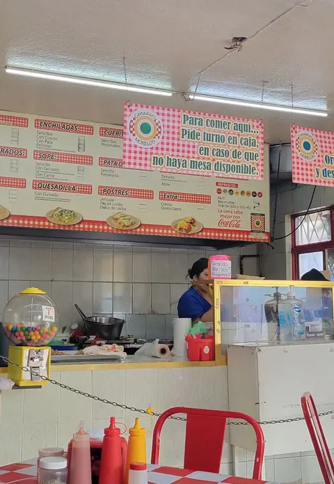
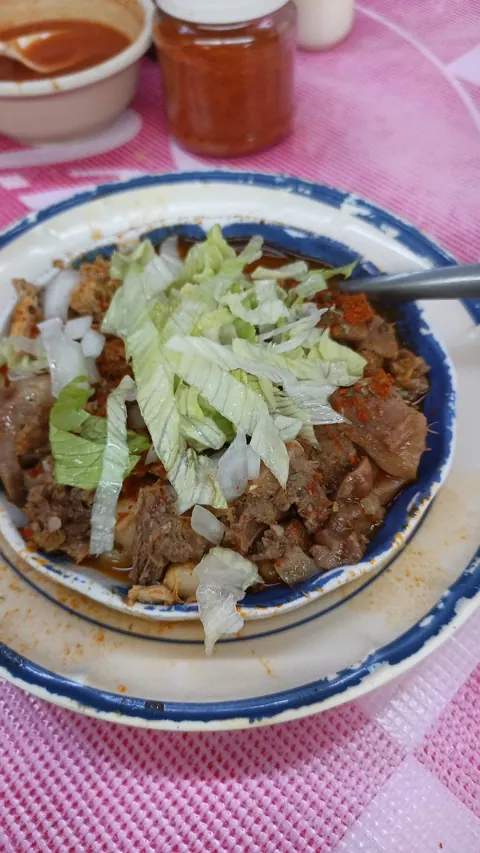
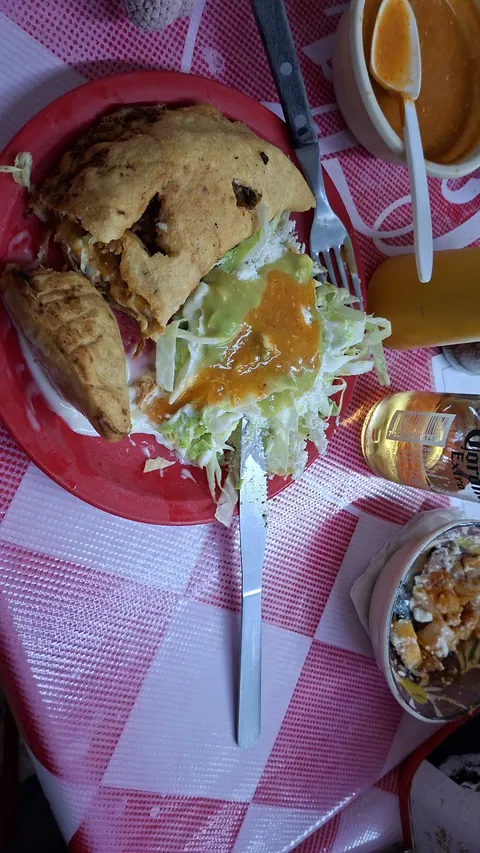

Pozole
Pregunta el precio
Tamaño
Carne
Todos los días 4:00 pm a 11:30 pm 4,5 en Google · 3,653 opiniones
Pozole, sopes, quesadillas y tacos dorados. Cada noche, en Corregidora 502.
La mesa
Toca lo que se te antoja. Abajo queda tu pedido listo para dictar por teléfono.

Pregunta el precio
Tamaño
Carne

Pregunta el precio

Pregunta el precio

Pregunta el precio

Pregunta el precio
La carta
Los precios se preguntan por teléfono. Pregunta el precio y pide.
Infantil, chico, mediano o grande. Maciza, lengua, trompa o surtido.
Sencillos, con cueros o con pata.
Sencillas, con cueros, con pata o rellenas.
Sencillo, con guisado o con carne.
Con guisado.
Extra de crema o queso sierra.
Cueritos. Pata de puerco.
Jericaya, pay de limón y dulce de leche.
Refrescos, aguas frescas y cerveza.
Todos los días
De mole rojo, mole verde, rajas con queso y dulce.
Domingos por la mañana
Chico, mediano o grande.

O todo junto: pide el surtido.
Llamar y pedirReseñas
3,653 opiniones en Google
Excelente pozole y demás antojitos que se sirven aquí. Un sabor auténtico y las salsas que si son salsas porciones muy bastas y el precio correcto
La comida muy rica, las quesadillas muy ricas, grandes y bien servidas. (...) no me arrepiento por qué la comida si me gusto pero si es un poquito caro.
Excelente sazón y precios muy accesibles, los platillos muy bien servidos y sin duda, uno de los mejores pozoles en la ciudad. (...) Hay que ir con algo de paciencia, pero vale totalmente la pena
Visite este lugar por recomendaciones y nos gustó demasiado. ¡¡El sazón de la comida es muy bueno!!, (...) Si regresare porque me quede con antojo de mas platillos. Definitivamente Recomendado
Excellent place. Traditional flavor at great prices. Pozole is delicious, you can ask for lengua, maciza, trompa or a combination.
Some of the best Pozole I've eaten! This place is authentic and is a great value. It's a must try. Loved the service as well!
If I could give this place 10 stars I would! ... Definitely taste like homemade. It's the nostalgia of being a kid and eating at your grandparents home. The pozole and the service is what brought us back.
Galería



Visítanos
Todos los días 4:00 pm a 11:30 pm
Desde las 6:30 pm se llena y hay fila. Llega con tiempo.
Todo listo para completar
Pásanoslo por el mismo chat donde te llegó esta muestra.